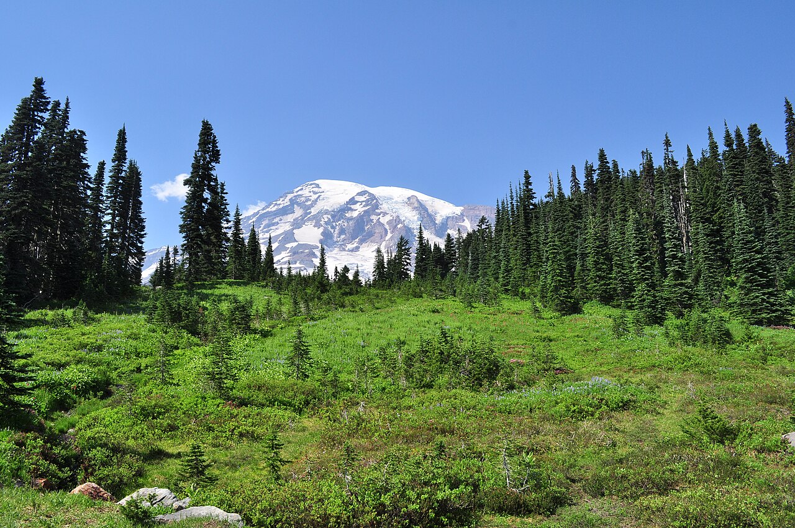

Mount Rainier National Park from Longmire and Paradise · 5-day family itinerary
Five summer days for an eight-year-old and a five-year-old on the southwest side of Mount Rainier. The plan sleeps four nights near the Nisqually Entrance, drives in early on weekdays, keeps every walk to about 2.5 miles (4 kilometres) or less, and points the navigation at the entrance, not the park’s street address.

Photo: Joe Mabel, Mount Rainier from Paradise meadow, August 2014, CC BY-SA 3.0, via Wikimedia Commons. Photographed in August 2014 at Paradise (Day 3). By law, walkers must stay on the trail in the Paradise meadows.

Checked before you commit
This illustrative route flies into Seattle–Tacoma International Airport, drives to Ashford outside the Nisqually Entrance for four nights, spends a day each at Longmire, Paradise and along Stevens Canyon Road, and drives back to the airport. The National Park Service (NPS) pages for Mount Rainier’s directions, road status, operating hours, day hikes, Paradise, Longmire, congestion, fees, construction, meadow protection and safety were read on 24 November 2026. Nothing was booked.
One base, one entrance. NPS puts Ashford, just outside the Nisqually Entrance, 85 miles (137 kilometres) from Seattle, and says the road from the entrance to Longmire stays open all year. It lists Longmire to Paradise as 12 miles and about 25 minutes, and warns that GPS may send drivers to the wrong one of the park’s five entrances or towards closed gates. Every day here starts at the same entrance.
Short walks, early starts. The longest walk is the Bench and Snow Lakes trail on Day 4, which NPS lists as 2.5 miles (4 kilometres) return and about 2 hours, in gradual ups and downs. NPS says the Paradise and Sunrise car parks fill by late morning at weekends and suggests weekdays and early or late arrivals, so the plan runs Monday to Friday and gets in early.
We didn’t check rooms in Ashford or at the National Park Inn, the hire car or flights. NPS says gas isn’t sold in the park and that there are no electric vehicle chargers there, so fill up before the entrance. A booking-hub link doesn’t hold a room, a car or a flight.
Planning boundary: dates are illustrative; the worked example runs Monday 9 to Friday 13 August 2027, counted from the flight in to the drive out. NPS says late July and August are generally the driest and warmest time of year, with summer highs in the 60s and 70s °F (about 16 to 26°C). It also warns that wet, cold weather can come at any time and that snow stays at 5,000 to 8,000 feet (about 1,500 to 2,400 metres) well into mid-July.
When we looked, NPS said no timed-entry reservation would be required anywhere in the park in 2026; it hadn’t said what applies in 2027. The Grove of the Patriarchs is closed while its bridge is replaced, with construction planned for the 2027 and 2028 seasons, so this plan leaves it out. Alfred doesn’t read park alerts, road status or the weather. A booking-hub link doesn’t prove a booking.
Route and family-coordination brief
Party: two adults, an eight-year-old and a five-year-old. Base: four nights near the Nisqually Entrance. NPS names two inns in the park, both run by Rainier Guest Services: the National Park Inn at Longmire, open all year with 25 rooms, and the Paradise Inn, generally open mid-May to early October. It also points to lodging in communities outside the southwest corner. Assumption: an ordinary hire car from the airport; we didn’t check rooms, hire terms or fares.
Entrance rule: NPS says the park’s street address, 55210 238th Avenue East, leads to its headquarters in Ashford, not to the Nisqually Entrance. For the entrance it gives 39000 State Route 706 E, Ashford, WA 98304, and recommends road maps as well as GPS. Our companion note on this is listed in the planning notes.
Road rule: NPS says park roads are winding with narrow shoulders and a top speed limit of 35 mph in most areas, and that parking isn’t allowed along road edges. It says Stevens Canyon Road closes for the season in mid-October or early November and doesn’t reopen until summer, so check road status before Day 4.
Trail rule: by law, walkers must stay on the trail at Paradise and in the Reflection Lakes meadow area. NPS asks visitors to stay on the trail even when that means crossing snow or mud, and not to feed wildlife; pets aren’t allowed on any park trail. It says never to hike alone, to carry the Ten Essentials and to tell someone your plans.
River rule: NPS says Mount Rainier is an active volcano and that most of its trails pass through geohazard zones. Sirens stand at Cougar Rock Campground, Longmire and the Nisqually Entrance. If you hear one, or notice the water suddenly rise or drop, the ground rumble or a loud roar, head uphill, away from the river.
Car rule: NPS warns of car break-ins at trailheads and car parks in and around the park. Leave no valuables in the car, and put anything you must store in the boot before you arrive, not at the trailhead.
Left out: Sunrise, which NPS says is usually open from early July to early September but which is a long drive from this base, with bridge construction expected on its access road from 2027 to 2029; Ohanapecosh, closed for construction expected to run to February 2027; the Grove of the Patriarchs; Carbon River and Mowich Lake, which can’t be reached from SR 165 while the Fairfax Bridge is closed; and the full Skyline Trail (5.5 miles, about 4.5 hours).
In Alfred, while the trip is still Planning, you can keep or change the hotel and then the flights Alfred picked, and browse the activity and meal carousels. Their Like toggles aren’t saved. We did not test whether city search offers Mount Rainier, Ashford or Longmire.
Day 1 — Fly into Seattle, drive to the Nisqually Entrance
Fly into Seattle–Tacoma International Airport and collect the hire car. Before leaving the car park, set the navigation to 39000 State Route 706 E, Ashford, WA 98304, the entrance address NPS gives, not the park’s street address.
Drive the route NPS gives from Seattle: I-5 south to SR 512 (exit 127), east to SR 7, south to SR 706 at Elbe, then east through Ashford. NPS puts Ashford 85 miles (137 kilometres) from Seattle; we didn’t time the drive. Fill the tank and buy picnic food on the way, because NPS says there is no gas in the park.
Stop at Ashford County Park, 29801 SR 706, which NPS describes as an 80-acre park with walking trails, a large play structure, swings and public toilets next to the playground. Then check in near the entrance.
Fallback: if the flight lands late, skip the playground and drive straight to your lodging; nothing inside the park is planned for today.
Live-check: NPS alerts and road status; whether timed entry applies in 2027; your check-in time.
Day 2 — Longmire: mineral springs and Carter Falls
Enter at the Nisqually Entrance early and drive to Longmire, a road NPS says stays open all year. Walk the Trail of the Shadows, across the road from the National Park Inn: NPS lists it as a 0.7-mile (1.1-kilometre) loop of about 20 minutes, past bubbling mineral springs and a replica of an early homestead cabin, with deer, birds and beavers about. A short spur leads into the meadow for a view of the mountain.
Visit the Longmire Museum, which NPS lists as open all year; only winter hours were posted when we looked, so check the summer hours. NPS says the National Park Inn’s dining room serves breakfast, lunch and dinner, and the general store next door sells basic groceries.
Drive 2 miles north to the trailhead across the road from Cougar Rock Campground and walk the Carter Falls Trail, a section of the Wonderland Trail: 2.2 miles (3.5 kilometres) return and about 2 hours, according to NPS. Madcap Falls is about 100 yards past Carter Falls. NPS warns that the log footbridge over the Nisqually River can wash out, so check conditions before crossing.
Fallback: if the footlog is out or the river looks high, skip Carter Falls and stop at Glacier Bridge, 5 miles from Longmire towards Paradise, where NPS says parking areas on either side give views of the Nisqually Valley. Don’t park on the bridge.
Live-check: the NPS trail conditions page for the Carter Falls footlog; Longmire Museum hours; the forecast.
Day 3 — Paradise: the Nisqually Vista and Myrtle Falls
Drive up from Longmire to Paradise, 12 miles and about 25 minutes, according to NPS. On a weekday, getting there early gives the best chance of a space; NPS says parking along road edges isn’t allowed. Walk the Nisqually Vista Trail from the west end of the lower Paradise car park: a 1.2-mile (1.9-kilometre) loop of about 45 minutes that NPS calls suitable for families with strollers, with views of the mountain and the Nisqually Glacier.
Visit the Henry M. Jackson Memorial Visitor Center in the upper car park, which NPS says is usually open daily from May to early October, with exhibits, the park film, ranger programmes and a cafeteria, the Paradise Camp Deli.
Walk the Skyline Trail to Myrtle Falls from the north side of the upper car park: 1 mile (1.6 kilometres) return and about 35 minutes through subalpine meadows, with views of the mountain and the Tatoosh Range. NPS says this stretch is wheelchair accessible with assistance. Stay on the trail; by law, walkers can’t leave it in the Paradise meadows. Then drive back down past Longmire to the base.
Fallback: NPS says to avoid the Myrtle Falls area until it is snow-free, and to try lower walks at Longmire if you aren’t prepared for snow. If the trail status map shows snow, or the cloud is down, keep to the Nisqually Vista loop and the visitor centre, or swap today with Day 2.
Live-check: the Paradise trail status map; the forecast; the NPS webcams; visitor centre hours.
Day 4 — Stevens Canyon Road: Reflection Lakes, Bench and Snow Lakes, Box Canyon
Drive through Paradise onto Stevens Canyon Road. NPS puts Reflection Lakes 3 miles (4.8 kilometres) east of Paradise, for a possible reflection of the mountain in still water, and lists the lakeside meadow as an area where walkers must stay on the trail by law. Inspiration Point, a large pullout just east of the Paradise Valley Road junction, looks back at the mountain and the Tatoosh Range.
Walk the Bench and Snow Lakes trail from its trailhead 1.5 miles east of Reflection Lakes: 2.5 miles (4 kilometres) return and about 2 hours, by NPS’s figures, in gradual ups and downs over low ridges. Bench Lake comes after 0.75 miles and Snow Lake 0.5 miles further on; NPS says bear grass and meadow flowers bloom here in summer.
Continue east to Box Canyon, which NPS places 12 miles west of Ohanapecosh on Stevens Canyon Road; by our arithmetic from NPS distances, that is about 11 miles past Paradise. NPS said there was no drinking water or flush toilet at Box Canyon in 2026, so bring water.
The 0.5-mile (0.8-kilometre) loop takes about 30 minutes, joined at each end by the road bridge and a wooden footbridge, with a 180-foot (55-metre) drop to the Muddy Fork of the Cowlitz River in a narrow slot canyon. Then drive back west the way you came.
Fallback: if Stevens Canyon Road isn’t open yet, or construction affects it, go back to Paradise in the late afternoon, when NPS says crowds are lighter, or spend the day at Longmire.
Live-check: NPS road status for Stevens Canyon Road; the park construction page; the forecast.
Day 5 — Twin Firs, then Seattle
Check out and drive towards the Nisqually Entrance. On the way, stop at the Twin Firs Loop, 2 miles west of Longmire on the road to the entrance: NPS lists it as a 0.4-mile (0.6-kilometre) loop of about 20 minutes through old-growth forest.
Leave by the Nisqually Entrance and drive back on SR 706, SR 7, SR 512 and I-5 to Seattle–Tacoma International Airport. NPS gives 85 miles (137 kilometres) between Seattle and Ashford; we didn’t time the drive. Fill the tank before returning the car, and book an afternoon or evening flight.
Return the hire car and fly out.
Fallback: if the flight is early, skip Twin Firs and stretch legs at the Ashford County Park playground on the way out instead, or leave straight away.
Live-check: your flight time; the car return time; traffic on I-5.
Planning notes
Related travel note: The park address is not the park gate.
Dates are illustrative. At decision time, recheck the NPS road status page and alerts, the operating hours for Longmire and Paradise, the trail conditions page (for the Carter Falls footlog and snow at Paradise), the park construction page, whether NPS has announced timed entry for 2027, the weather forecast, your lodging, your hire car terms and your flight times.
Why one base. NPS puts Paradise 19 miles (30 kilometres) east of the Nisqually Entrance and 12 miles east of Longmire, and Reflection Lakes 3 miles (4.8 kilometres) further east on Stevens Canyon Road. Every day in this plan starts from the same entrance, so the navigation address is set once and every drive home is the same road.
Why weekdays and early starts. NPS says waits at the Nisqually Entrance can be over an hour on the busiest summer weekends and holidays, that entering before 10 am or after 2.30 pm helps when visitation is heavy, and that the Paradise car parks fill by late morning at weekends. Overflow parking at Paradise can mean a long uphill walk.
What we couldn’t confirm. Whether NPS will require timed entry in 2027; when Stevens Canyon Road will open in summer 2027 and how the Grove of the Patriarchs construction will affect it; and summer 2027 hours for the Longmire Museum, since only winter hours were posted when we looked. NPS publishes no drive time from the airport to Ashford, so we didn’t time it.
Also not checked: sunset times, lodging, school holiday dates, ranger programme times, or the state of the Carter Falls footlog in August 2027. No prices are quoted here; NPS lists entrance fees and passes on its fees page and says its entrance stations take card and digital payments only.
Cold, wet and high. Pack warm layers and rain gear even in August, as NPS advises for changeable mountain weather, plus water, food and the rest of the Ten Essentials. NPS says some trails stay snow-covered well into summer; at Paradise, check the trail status map before walking and turn back rather than cross steep snow.
Plan a trip
Start with your people, dates and pace, then review the editable plan before booking.
Plan a trip